전자기기기능사 (2002-10-06 기출문제)
1과목: 전기전자공학
1. 기전력 1.5V, 전류용량 1A인 건전지 6개가 있다. 이것을 직.병렬로 연결하여 3V, 3A의 출력을 얻으려면 어떻게 접속하여야 하는가?
- 6개 모두 직렬 연결
- 6개 모두 병렬 연결
- 2개 직렬 연결한 것을 3조 병렬 연결
- 3개 직렬 연결한 것을 2조 병렬 연결
(정답률: 82%)

2. 쿨롱의 법칙에 맞는 식은?
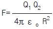
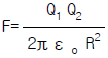
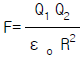
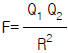
(정답률: 56%)
3. 도통상태의 SCR을 턴 오프(turn off)시키는 방법으로 적당하지 않은 것은?
- 게이트에 (-)펄스를 가한다.
- 애노드 전류를 차단한다.
- 애노드 전류를 유지전류 이하로 낮게 한다.
- 애노드와 캐소드간에 역방향으로 전압을 가한다.
(정답률: 31%)
4. 브리지 정류회로에서 입력전압이 9V의 정현파라면 다이오드 1개에 걸리는 최대 역전압[PIV]은 몇 V 인가?(오류 신고가 접수된 문제입니다. 반드시 정답과 해설을 확인하시기 바랍니다.)
- 9√2
- 9
- 18√2
- 18
(정답률: 59%)
5. 단상반파 정류회로에서 정류효율은 이론적 최대값이 몇 % 인가?
- 40.6
- 50
- 81.2
- 100
(정답률: 42%)
6. 변조도 80%의 진폭변조파를 자승검파했을 때 나타나는 신호파 출력의 왜율은?
- 15
- 20
- 25
- 30
(정답률: 62%)
7. 그림과 같은 발진회로가 지속 발진을 하기 위한 트랜지스터의 전류증폭률 hfe는 어떤 조건이어야 하는가?
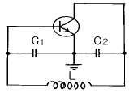
- hfe = ω2 L C2
- hfe = ω2 L2 C22
- hfe = ω2 L2 C2
- hfe = ω L C2
(정답률: 49%)
8. 그림에서 R=100kΩ, C=100pF일 때 시정수 τ는 몇 μsec 인가?
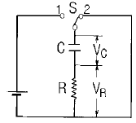
- 1
- 10
- 100
- 1000
(정답률: 37%)
9. 펄스변화의 직후에 펄스와 반대방향으로 생기는 변화를 무엇이라 하는가?
- 새그
- 오버 슈트
- 스파이크
- 링깅
(정답률: 43%)
10. 그림과 같은 논리회로에서 출력 X에 맞는 논리식은?
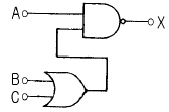
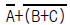
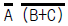
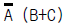
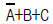
(정답률: 38%)
11. 다이오드-트랜지스터 논리회로(DTL)의 특징이 아닌 것은?
- 소비전력이 적다.
- 잡음여유도가 크다.
- 응답속도가 비교적 빠르다.
- 저속도 및 중속도에서 동작이 안정하다.
(정답률: 52%)
12. 회로망의 임의의 접속점에서 들어오는 전류I1=3A, I2=4A, I3=2A이면, 나가는 전류 I4는 몇 A 인가?
- 2
- 4
- 6
- 9
(정답률: 70%)
13. ＩC연산증폭기의 입력은 일반적으로 무엇으로 되어 있는가?
- 임피던스증폭기
- 전류증폭기
- 차동증폭기
- 전압증폭기
(정답률: 51%)
14. 자속밀도 1Wb/m2인 평등자계 중에 길이 50cm의 직선 도체가 자계에 수직방향으로 속도 1m/s로 운동할 때 유기 기전력은 최대 몇 V 인가?
- 0.1
- 0.5
- 1.5
- 5
(정답률: 54%)
15. 그림과 같은 연산증폭기의 명칭은? (단, Vi는 입력 신호전압이다.)
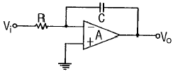
- 미분기
- 적분기
- 가산기
- 부호변환기
(정답률: 66%)
2과목: 전자계산기일반
16. 이미터 접지 증폭회로에서 바이어스 안정지수 S 는 얼마인가? (단, 고정 바이어스임)
- 1-β
- 1+β
- 1-α
- 1+α
(정답률: 75%)
17. 주기적으로 재기록하면서 기억 내용을 보존해야 하는 반도체 기억장치는?
- DRAM
- EPROM
- PROM
- SRAM
(정답률: 72%)
18. 컴퓨터의 연산자 기능이 아닌 것은?
- 함수연산기능
- 제어기능
- 기억기능
- 전달기능
(정답률: 44%)
19. 그림의 연산장치에서 C 레지스터에 저장되는 값은?
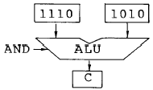
- 1010
- 1110
- 1101
- 1001
(정답률: 79%)
20. 순서도 기호 중에서 비교, 판단 등을 나타내는 기호는?
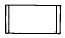
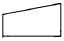
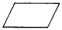
(정답률: 90%)
21. 순서도의 기본형에 속하지 않는 것은?
- 직선형
- 결합형
- 선택형
- 반복형
(정답률: 59%)
22. "마이크로프로세서에서 버스 요구 사이클(bus request cycle)은 주변장치가 CPU로 부터 버스 사용을 허락받아 CPU의 간섭없이 독자적으로 메모리와 데이터를 주고 받는 방식인 ( ) 동작에 필요하다." ( )안에 들어갈 용어는?
- request
- cycle
- DMA
- MAR
(정답률: 76%)
23. 버스란 MPU, Memory, I/O 장치들 사이에서 자료를 상호 교환하는 공동의 전송로를 말하는데 다음 보기 중 양방향성 버스에 해당하는 것은?
- 주소 버스(Address Bus)
- 제어 버스(Control Bus)
- 데이터 버스(Data Bus)
- 입曺출력 버스(I/O Bus)
(정답률: 62%)
24. 다음에 열거하는 논리 연산 가운데 관심이 없는 일부분을 지우고 필요한 것만 가지고 처리하기 위한 연산은?
- AND
- OR
- 보수 연산
- MOVE
(정답률: 73%)
25. 중앙처리장치(CPU)의 구성 요소에 해당하지 않는 것은?
- 연산장치
- 입력장치
- 제어장치
- 기억장치
(정답률: 67%)
26. 논리 연산 명령에 해당되지 않는 것은?
- OR
- AND
- ADD
- XOR
(정답률: 84%)
27. 큐 메모리(Queue memory)에 대한 정보 입曺출력 방식은?
- FIFO
- FILO
- LIFO
- LILO
(정답률: 73%)
28. 10진수 20을 2진수로 변환하면?
- 11110
- 10101
- 10100
- 00001
(정답률: 74%)
29. 오차와 정도에서 측정값을 M, 참값을 T라 하면 오차 ε 를 나타내는 관계식이 옳은 것은?
- ε = T - M
- ε = M - T
- ε = M + T
- ε = M × T
(정답률: 69%)
30. 열전쌍형 전류계는 어느 효과를 이용한 것인가?
- 톰슨 효과
- 피에조 효과
- 지벡 효과
- 펠티어 효과
(정답률: 52%)
3과목: 전자측정
31. 내부저항 4㏀, 최대눈금 50V의 전압계로 300V의 전압을 측정하기 위한 배율기 저항은 몇 Ω 인가?
- 670
- 800
- 20000
- 24000
(정답률: 55%)
32. 교류 검류계로서 주로 상용주파수에 사용되고 있는 것은?
- 충격형 검류계
- 진동형 검류계
- 지침형 검류계
- 반조형 검류계
(정답률: 43%)
33. 측정자의 눈금 오독, 부주의로 발생하는 오차는?
- 이론 오차
- 우연 오차
- 계기 오차
- 개인 오차
(정답률: 76%)
34. 레헤르선 주파수계의 측정 범위는?
- 저주파(Low Frequency)
- 고주파(High Frequency)
- 초단파(Very High Frequency)
- 마이크로파(Super High Frequency)
(정답률: 41%)
35. 다음은 검류계의 내부저항 측정 그림이다. 검류계의 내부저항 Rg의 값을 구하는 계산식이 옳은 것은?
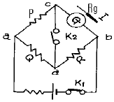
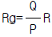
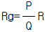
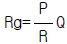
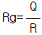
(정답률: 60%)
36. 오실로스코프의 수직축 단자에 측정하고자 하는 신호를 가하고, 수평축 단자에는 톱니파를 가하는데 그 주된 이유는?
- 위상반전
- 동기를 맞추려고
- 파형의 진폭을 조정하기 위하여
- 리사쥬 도형을 보기 위하여
(정답률: 37%)
37. 열전대형 계기의 눈금은?
- 균등눈금
- 대수눈금
- 자승눈금
- 대각선눈금
(정답률: 26%)
38. 교번 자속과 맴돌이 전류의 상호 작용을 이용한 계기는?
- 전류력계형 계기
- 유도형 계기
- 가동철편형 계기
- 가동코일형 계기
(정답률: 67%)
39. 각종 무선기기의 주파수 특성이나 수신기의 중간주파 증폭기의 특성을 관측할 때 사용되는 발진기는?
- 이상 발진기
- 음차 발진기
- 비트 발진기
- 소인 발진기
(정답률: 58%)
40. 개인이 휴대하기 편리하고, 전자기기 및 전기를 측정하기 쉬운 테스터기 중에는 디지털 방식과 아날로그 방식이 있다. 아날로그 방식에 비하여 디지털 방식의 장점에 속하지 않는 것은?
- 측정이 매우 쉽고, 신속히 이루어진다.
- 측정 값을 읽을 때 개인적인 판독 오차가 발생하지 않는다.
- 잡음 및 외부의 영향에 덜 민감하고, 소수점까지도 정확하게 읽을 수 있다.
- 숫자로 지시가 되므로 안테나의 주파수를 정확하게 읽을 수 있고, 계산이 용이하다.
(정답률: 44%)
41. 고주파 유도가열에서 전류의 침투깊이 S의 값은 주파수가 높아짐에 따라 어떻게 변하는가?
- 증가한다.
- 감소한다.
- 변화하지 않는다.
- 감소-증가 상태를 반복한다.
(정답률: 50%)
42. 초음파를 이용한 측심기로 바다 깊이를 측정한 결과 4초의 왕복시간이 걸렸다. 바다속의 깊이는 얼마인가? (단, 바닷물 온도는 15℃, 초음파속도는 1527[m/sec])
- 6108[m]
- 38.1[m]
- 3⑤4[m]
- 1527[m]
(정답률: 77%)
43. 섬유제품의 염색에 이용되는 초음파의 작용은?
- 응집작용
- 확산작용
- 에멀션화작용
- 분산작용
(정답률: 60%)
44. 신호변환 검출에서 다이아프램 조절기는 무엇을 변위시키는가?
- 전압
- 전류
- 압력
- 온도
(정답률: 56%)
45. 미분 요소의 전달함수는?
- G(S) = K
- G(S) = K/(1+ST)
- G(S) =1/(KS)
- G(S) = KS
(정답률: 33%)
4과목: 전자기기 및 음향영상기기
46. 제어량의 종류에 따른 자동제어계의 분류에서 자동조정 제어량의 종류에 해당되지 않는 것은?
- 속도
- 온도
- 전압
- 전류
(정답률: 52%)
47. 기구에 관측 장치를 적재하여 대기로 띄워 보내는 것을 무엇이라 하는가?
- 라디오 존데
- 레이더
- 덱카
- 전파 고도계
(정답률: 69%)
48. 아래 도면은 기상관측에 이용하는 라디오존데 방식 중 변조 주파수를 변화 방식에 사용하는 회로이다. 적당한 회로 명칭은?
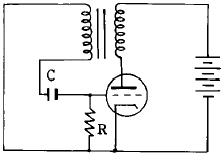
- 클리퍼 회로
- 클램핑 회로
- 중간 주파 증폭 회로
- 블록킹 발진기
(정답률: 39%)
49. 반도체의 성질을 가지고 있는 물질에 전장을 가하면 발광 현상을 일으키는 것은?
- 충전 발광
- 자장 발광
- 전장 발광
- 정전 발광
(정답률: 84%)
50. 전자 냉동기의 효율은?
- 흡열량/발열량
- 발열량/흡열량
- 흡열량/소비전력
- 발열량/소비전력
(정답률: 62%)
51. 수퍼 헤테로다인 수신기의 특성이 아닌 것은?
- 중간 주파수에서 증폭하므로 증폭도가 높아 감도가 좋다.
- 신호대 잡음비 개선을 위해 진폭 제한기를 사용한다.
- 일반적으로 선택도가 우수하다.
- 중간 주파수로 변화하므로 선택도가 향상된다.
(정답률: 53%)
52. 단파 수신기에서 리미터를 사용하는 주된 이유는?
- 주파수 특성을 향상시키기 위하여
- 페이딩을 방지하기 위하여
- 이득을 높이기 위하여
- 출력을 높이기 위하여
(정답률: 62%)
53. 수신기의 성능을 해석하는데 종합 특성으로 적합하지 않은 것은?
- 궤환율
- 감도
- 충실도
- 선택도
(정답률: 58%)
54. 다음 블록도는 FM 수신기의 계통도이다. 빈칸 A, B에 해당하는 명칭은?
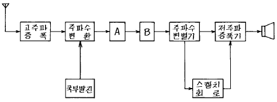
- A = 중간 주파 증폭기, B = 저주파 증폭기
- A = 고주파 증폭기, B = 진폭 제한기
- A = 중간 주파 증폭기, B = 진폭 제한기
- A = 고주파 증폭기, B = 검파기
(정답률: 72%)
55. 천연색 수상기의 협대역 방식 구성도에서 빈 부분에 들어갈 내용은?
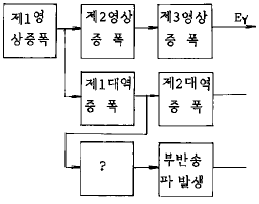
- 영상 출력
- 버어스트 증폭
- x축 복조
- 수정 휠터
(정답률: 68%)
56. 주파수 50[MHz]인 전파의 1/4 파장에 대한 값은?
- 1.5[m]
- 3[m]
- 15[m]
- 30[m]
(정답률: 47%)
57. 잡음 전압이 10[㎶]이고 신호 전압이 10[V]일 때, S/N은 몇 [㏈]인가?
- -60[㏈]
- -120[㏈]
- -80[㏈]
- -40[㏈]
(정답률: 50%)
58. 오디오 앰프(audio amp)에 부궤환을 걸어줄 때의 장점이 아닌 것은?
- 주파수 특성이 개선된다.
- 안정도가 향상된다.
- 찌그러짐이 감소된다.
- 증폭도가 증가한다.
(정답률: 53%)
59. VHS 방식 VTR 테이프의 처음과 끝부분에 자성체가 없는 투명한 폴리에스테르 필름이 있는데, 이것의 용도는 무엇인가?
- 빛 센서에 의한 종단부 검출
- 자성체 유무에 의한 종단부 검출
- 장력에 의한 자동 리와인드 및 자동정지
- 처음과 끝부분의 육안 식별
(정답률: 56%)
60. 태양 전지에서 음극 단자가 연결된 부분의 구성 물질은?
- P 형 실리콘
- N 형 실리콘
- 셀렌
- 붕소
(정답률: 82%)
반면에 건전지를 병렬 연결하면 전압은 그대로 유지되고 전류용량이 누적됩니다. 따라서 6개를 병렬 연결하면 1.5V, 6A의 출력을 얻을 수 있습니다.
하지만 문제에서 요구하는 출력은 3V, 3A입니다. 따라서 건전지를 직렬 연결하여 전압을 높이고, 이를 2개씩 묶어 병렬 연결하여 전류용량을 높이는 방법을 사용해야 합니다. 이렇게 하면 2개를 직렬 연결하면 3V, 1A의 출력을 얻을 수 있고, 이를 3조 병렬 연결하면 전류용량이 누적되어 3V, 3A의 출력을 얻을 수 있습니다. 따라서 정답은 "2개 직렬 연결한 것을 3조 병렬 연결"입니다.